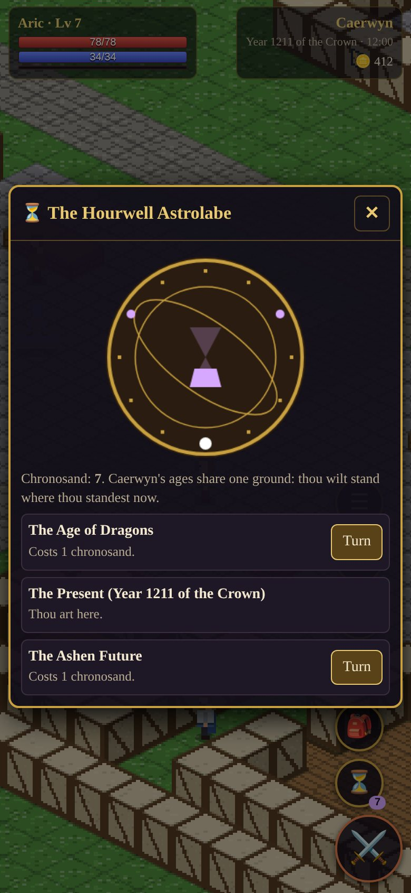

I
Turn the hours
The Hourwell Astrolabe is brass rings around a glass of bright sand. Spend the sand to turn Caerwyn's three ages: the Age of Dragons, the Present, and an Ashen Future of glass statues and stilled lakes.
The ages share one ground, so you arrive exactly where you stood. Plant an ironoak a thousand years ago and walk back to find it grown.
